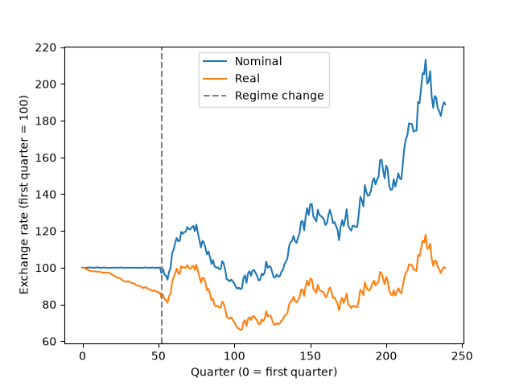
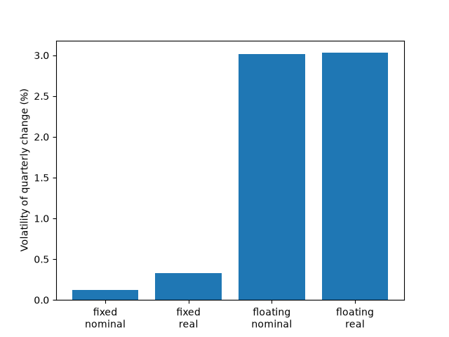

第 12 章: 貨幣の中立性と金融政策¶
12.1 この章の地図¶
古典派の二分法は、「貨幣は、物価などの名目変数を決めるが、実質変数には影響しない」という考え方です。この章では、2 つの角度から確かめます。第 11 章の 20 か国のパネルで、貨幣の伸び率が、実質成長率に影響しているか。そして、固定相場から変動相場に移ったとき、名目と実質の為替レートが、どう動いたか（相対価格）。最後に、第 2 部のまとめとして、実際の統計（内閣府の四半期 GDP）に、第 8・9 章の関数を、そのまま使います。
| 項目 | 内容 |
|---|---|
| 経済学の題材 | 貨幣の中立性、古典派の二分法、実質為替レート、固定相場と変動相場、物価の粘着性 |
| 使う Python の機能 | 第 3 章の回帰、PeriodIndex の比較と Period、論理値で行を選ぶ、csv モジュールと re（正規表現）による CSV の読み込み、Any の型ヒント |
| 新しく導入するライブラリ | なし |
| 完成形 | real_exchange_rate、log_change、load_exchange、regime_statistics、money_neutrality_regression、load_cabinet_quarterly、year_over_year |
| ファイル | 実装: lib/chapter12/exchange.py、lib/chapter12/cabinet.py（実際の統計の読み込み）、lib/chapter12/plot.py（為替レートの図）／テスト: test/chapter12/test_exchange.py、test/chapter12/test_cabinet.py、test/chapter12/test_plot.py（自分で書くときは、practice/chapter12/ に、同じ名前で作ります） |
| データ | data/exchange.csv（架空の国の為替レートと物価、1960Q1〜2019Q4。実在の統計ではありません）、第 11 章の data/money_panel.csv、実際の統計（12.5 節） |
経済学の式とコードの対応¶
| 経済学 | 式 | コード |
|---|---|---|
| 実質為替レート | q = e × P* ÷ P | real_exchange_rate(nominal_rate, price_foreign, price_domestic) |
| 変化率 | 100 × Δln x | log_change(series) |
| 相場制度による違い | 切り替えの前後で、変動の大きさ・相関を比べる | regime_statistics(df, break_period) |
| 貨幣の中立性 | 実質成長率 = c + β·貨幣の伸び率（β ≈ 0） | money_neutrality_regression(panel) |
記号について: e は為替レート（自国通貨 / 外国通貨）、P* は外国の物価、P は自国の物価、q は実質為替レートです（第 7 章と同じ使い方）。一覧は、記号について を参照してください。
12.2 予想する¶
- 貨幣の伸び率が高い国は、実質成長率も高い（あるいは低い）でしょうか。貨幣が中立なら、どうなりますか
- 為替レートが、固定から変動に変わると、名目為替レートは、どうなりますか。物価は、すぐに動くでしょうか（物価が粘着的なら）
- 物価が粘着的だと、名目為替レートの動きは、実質為替レートの動きに、どう反映されますか
12.3 貨幣の中立性と、為替レートの考え方¶
貨幣の中立性¶
貨幣量を増やしても、長期には、生産や雇用などの実質変数は、変わらず、物価だけが上がる、というのが、貨幣の中立性です。国の間の比較では、「貨幣の伸び率が高い国で、実質成長率が高いか」で、確かめられます（傾きが 0 に近ければ、中立）。
実質為替レート¶
実質為替レート q = e × P* ÷ P は、自国の財が、外国の財の何倍の価値を持つか（相対価格）です。名目為替レート e が変わっても、物価がそれに合わせて動けば、q は変わりません。物価が粘着的（すぐに動かない）なら、e の動きは、そのまま q の動きになります。
固定相場と変動相場¶
固定相場では、名目為替レートが、ほとんど動きません。変動相場では、名目為替レートが、大きく動きます。物価が粘着的であれば、変動相場で、実質為替レートも、名目と同じように大きく動きます。
12.4 プログラミング¶
貨幣の中立性を回帰で確かめる¶
def test_貨幣の伸び率は実質成長率を説明しない() -> None:
result = money_neutrality_regression(load_money_panel())
assert result.coefficients["money_growth"] == pytest.approx(0.002, abs=0.01)
assert abs(result.t_values()["money_growth"]) < 2
def test_貨幣の中立性の回帰は実質成長率を貨幣の伸び率に回帰する() -> None:
result = money_neutrality_regression(load_money_panel())
assert list(result.coefficients.index) == ["const", "money_growth"]
assert result.coefficients["const"] == pytest.approx(2.44, abs=0.01)
def money_neutrality_regression(panel: pd.DataFrame) -> OlsResult:
"""実質成長率を、貨幣の伸び率に回帰する（第 11 章のパネル）。
貨幣が中立なら、傾きは 0 に近い。
"""
return fit_ols(
pd.Series(panel["real_growth"]),
pd.DataFrame({"money_growth": panel["money_growth"]}),
)
第 11 章のパネル（600 行）で、実質成長率を貨幣の伸び率に回帰した結果は、次のとおりです。
| 変数 | 係数 | 標準誤差 | t 値 |
|---|---|---|---|
| 定数項 | 2.440 | 0.067 | 36.3 |
| 貨幣の伸び率 | 0.002 | 0.002 | 0.7 |
決定係数は 0.0008 です。傾きは 0.002 で、ほぼ 0 です（t 値 0.7 で、有意ではありません）。貨幣の伸び率が 1 ポイント高い国でも、実質成長率は 0.002 ポイントしか違いません。貨幣は、中立です（このデータでは）。
これは、架空のデータの結果です。 このデータは、実質成長率を、貨幣の伸び率と無関係に作りました。ここでの確認は、「関数が、中立を検出できる」ことです。実際の経済で、貨幣が中立かは、別の問題です（短期には、非中立とされます）。
実質為替レート¶
def test_実質為替レートは名目レートに外国の物価を掛けて自国の物価で割る() -> None:
assert real_exchange_rate(100, 2, 4) == pytest.approx(50)
def test_系列でも計算できる() -> None:
e = pd.Series([100.0, 200.0])
q = real_exchange_rate(e, pd.Series([2.0, 2.0]), pd.Series([4.0, 8.0]))
assert q.tolist() == pytest.approx([50, 50])
@pytest.mark.parametrize("args", [(0, 2, 4), (100, 0, 4), (100, 2, 0)])
def test_為替レートと物価は正でなければならない(
args: tuple[float, float, float],
) -> None:
with pytest.raises(ValueError, match="正"):
real_exchange_rate(*args)
def test_自国と外国の物価が同じ率で上がれば実質レートは名目レートに比例する() -> None:
e = pd.Series([100.0, 110.0, 121.0])
p = pd.Series([1.0, 1.1, 1.21])
pf = pd.Series([1.0, 1.1, 1.21])
q = real_exchange_rate(e, pf, p)
assert (q / e).tolist() == pytest.approx([1, 1, 1])
def real_exchange_rate(
nominal_rate: Any, price_foreign: Any, price_domestic: Any
) -> Any:
"""実質為替レート q = e × P* ÷ P。数でも、系列でも計算できる。"""
for value in (nominal_rate, price_foreign, price_domestic):
if np.any(np.asarray(value) <= 0):
raise ValueError("為替レートと物価は正でなければならない")
return nominal_rate * price_foreign / price_domestic
この関数は、数でも、系列でも使えます（型ヒントは Any です）。第 7 章の相対価格水準と、同じ考え方です。
変化率と、データの読み込み¶
def test_対数の変化率はパーセント() -> None:
changes = log_change(pd.Series([100.0, 110.0, 99.0]))
assert changes.tolist() == pytest.approx([100 * np.log(1.1), 100 * np.log(0.9)])
def test_同梱のデータは1960年から2019年までの240四半期() -> None:
df = load_exchange()
assert len(df) == 240
assert str(df.index[0]) == "1960Q1"
assert str(df.index[-1]) == "2019Q4"
assert list(df.columns) == ["nominal_rate", "price_domestic", "price_foreign"]
def log_change(series: pd.Series) -> pd.Series:
"""対数の変化率（%）= 100 × Δln x。最初の期は、前がないので、除く。"""
return (100 * series.apply(np.log).diff()).dropna()
def load_exchange(path: Path = DEFAULT_DATA_PATH) -> pd.DataFrame:
"""CSV を読み込み、四半期を行の名前にした表を返す。
列は nominal_rate（自国通貨 / 外国通貨）・price_domestic・price_foreign
（物価指数）。
"""
raw = pd.read_csv(path)
periods = pd.PeriodIndex(
[f"{y}Q{q}" for y, q in zip(raw["year"], raw["quarter"], strict=True)],
freq="Q",
)
return raw.drop(columns=["year", "quarter"]).set_index(periods)
data/exchange.csv は、架空の国の、1960Q1〜2019Q4 の、名目為替レート（自国通貨 / 外国通貨）と、自国・外国の物価指数です。1972 年までは固定相場、1973 年以降は変動相場として、作りました。
相場制度で比べる¶
def test_相場制度ごとの統計は固定と変動の2行() -> None:
stats = regime_statistics(load_exchange(), "1973Q1")
assert list(stats.index) == ["fixed", "floating"]
assert list(stats.columns) == [
"nominal_volatility",
"real_volatility",
"correlation",
]
def test_変動相場では名目レートが大きく動き実質レートも同じように動く() -> None:
stats = regime_statistics(load_exchange(), "1973Q1")
nominal = stats["nominal_volatility"]
assert float(nominal["floating"]) > 10 * float(nominal["fixed"])
assert float(stats["correlation"]["floating"]) > 0.95
def test_固定相場では名目レートの動きと実質レートの動きは弱い関係() -> None:
stats = regime_statistics(load_exchange(), "1973Q1")
assert float(stats["correlation"]["fixed"]) < 0.5
def test_相場制度ごとの統計の値() -> None:
stats = regime_statistics(load_exchange(), "1973Q1")
assert stats["nominal_volatility"].tolist() == pytest.approx(
[0.126, 3.012], abs=0.001
)
assert stats["real_volatility"].tolist() == pytest.approx([0.327, 3.030], abs=0.001)
assert stats["correlation"].tolist() == pytest.approx([0.24, 0.993], abs=0.005)
@pytest.mark.parametrize(
"break_period", ["1960Q1", "1960Q3", "2030Q1", "2019Q4", "2019Q3"]
)
def test_切り替えの時点はデータの範囲の内側でなければならない(
break_period: str,
) -> None:
with pytest.raises(ValueError, match="切り替え"):
regime_statistics(load_exchange(), break_period)
def regime_statistics(df: pd.DataFrame, break_period: str) -> pd.DataFrame:
"""切り替えの前（fixed）と後（floating）で、為替レートの動きを比べる。
名目為替レートの変動の大きさ、実質為替レートの変動の大きさ
（対数の変化率の標準偏差）、名目と実質の変化率の相関。
切り替えの前後に、3 四半期以上のデータが必要（変化率が 2 個以上）。
"""
period = pd.Period(break_period, freq="Q")
if min((df.index < period).sum(), (df.index >= period).sum()) < 3:
raise ValueError("切り替えの前後に、それぞれ 3 四半期以上のデータが必要")
real = real_exchange_rate(
df["nominal_rate"], df["price_foreign"], df["price_domestic"]
)
rows = {}
for name, mask in (("fixed", df.index < period), ("floating", df.index >= period)):
nominal_change = log_change(pd.Series(df["nominal_rate"][mask]))
real_change = log_change(pd.Series(real[mask]))
rows[name] = {
"nominal_volatility": float(nominal_change.std()),
"real_volatility": float(real_change.std()),
"correlation": float(nominal_change.corr(real_change)),
}
return pd.DataFrame.from_dict(rows, orient="index")
切り替えの前後に、3 四半期以上のデータが必要です（変化率が 2 個以上ないと、標準偏差と相関が求まりません）。足りないときは、エラーにします。
| 相場制度 | 名目の変動の大きさ | 実質の変動の大きさ | 名目と実質の変化率の相関 |
|---|---|---|---|
| 固定相場（〜1972 年） | 0.126 | 0.327 | 0.240 |
| 変動相場（1973 年〜） | 3.012 | 3.030 | 0.993 |
（変動の大きさ: 四半期の対数の変化率の標準偏差、%）


図の読み方:
- 縦の点線（1973 年第 1 四半期）までは、名目為替レート（青）は、ほとんど動かず、実質為替レート（オレンジ）は、ゆっくり下がります（自国の物価上昇率が、外国より高いため）
- 点線の後、名目が大きく動き始めます。実質は、名目とほぼ同じ形で動きます（相関 0.993）。物価が粘着的なので、名目の動きが、そのまま、実質の動きになります
- 棒グラフでは、変動相場の名目と実質の変動の大きさが、ほぼ等しく（3.01 と 3.03）、固定相場（0.13 と 0.33）の、名目で約 24 倍、実質で約 9 倍です
これは、架空のデータの結果です。 このデータは、物価を粘着的に（小さなゆらぎだけで）作りました。実際の経済でも、ブレトン・ウッズ体制の崩壊（1973 年）の前後で、名目と実質の為替レートの変動が、大きく変わったことが、知られています。
予想の答え合わせ¶
予想した答えを、プログラムで確かめます。
from lib.chapter11.money import load_money_panel
from lib.chapter12.exchange import load_exchange, money_neutrality_regression, regime_statistics
result = money_neutrality_regression(load_money_panel())
print("貨幣の伸び率の係数:", round(float(result.coefficients["money_growth"]), 4))
print("t 値:", round(float(result.t_values()["money_growth"]), 2))
stats = regime_statistics(load_exchange(), "1973Q1")
print("名目の変動の大きさ（固定、変動）:", stats["nominal_volatility"].round(3).tolist())
print("実質の変動の大きさ（固定、変動）:", stats["real_volatility"].round(3).tolist())
print("名目と実質の変化率の相関（固定、変動）:", stats["correlation"].round(3).tolist())
貨幣の伸び率の係数: 0.0016
t 値: 0.7
名目の変動の大きさ（固定、変動）: [0.126, 3.012]
実質の変動の大きさ（固定、変動）: [0.327, 3.03]
名目と実質の変化率の相関（固定、変動）: [0.24, 0.993]
- 1 つ目の問い: 貨幣が中立なら、貨幣の伸び率は、実質成長率と無関係（傾き 0）のはずです。実際の傾きは 0.0016（t 値 0.7）で、ほぼ 0 です。有意ではありません
- 2 つ目の問い: 固定相場から変動相場に移ると、名目為替レートの変動の大きさは、0.126 から 3.012 に、約 24 倍になります。物価は粘着的に作ってあるので、すぐには動きません
- 3 つ目の問い: 変動相場では、実質為替レートの変動の大きさが 3.03 で、名目（3.012）とほぼ等しく、名目と実質の変化率の相関は 0.993 です。名目の動きが、そのまま、実質為替レートの動きになります。固定相場では、相関は 0.24 でした
実行結果¶
cd apps/macro-programming/python
uv run pytest test/chapter12
33 passed
12.5 実際の統計で試す（内閣府の四半期 GDP）¶
最後に、第 2 部の実際の統計で、第 8・9 章の関数を試します。
データを取得する¶
内閣府・経済社会総合研究所の「四半期別 GDP 速報」の統計表一覧から、2 つの CSV を保存します（第 1 シリーズの第 11 章の、実際の統計の手順と、同じページです）。
| 表 | 統計表一覧での場所 | ファイル名（2026 年 1-3 月期 1 次速報の例） |
|---|---|---|
| 実質 GDP と、支出の各項目（四半期） | 「国内総生産(支出側)及び各需要項目」の「実額」の「実質季節調整系列」 | gaku-jk2611.csv |
| GDP デフレーター（四半期） | 同じ表の「デフレーター」の「四半期デフレーター季節調整系列」 | def-qk2611.csv |
保存先は、apps/macro-programming/python/data/ です（Git の管理から外れる、実際の統計の置き場）。保存先は apps/macro-programming/python/data/ で、コード片は、そのディレクトリで uv run python で実行します。統計表は、内閣府・経済社会総合研究所の「四半期別 GDP 速報」のページ（https://www.esri.cao.go.jp/jp/sna/ ）から辿れます。2026 年 5 月公表の 1 次速報の表は、.../sna/data/data_list/sokuhou/files/2026/qe261/tables/ にあります。ファイル名の 2611 は、公表の回です。新しい回では、ファイル名・行数（129 四半期）・結果の数値が変わります。統計は、後から改定されます。ファイルを取得した日と、公表の回を、記録します。利用規約の条文は、確認できていません。各統計の利用条件を確認し、出典（公表の回と取得日）を明記してください。
CSV の形（実物で確かめたこと）¶
| 項目 | 内容 |
|---|---|
| 文字コード | cp932（UTF-8 では読めない） |
| 見出し | 先頭の 7 行 |
| 四半期の行 | 第 1 四半期の行にだけ年が付く（1994/ 1- 3.）。続く行は 4- 6.・7- 9.・10-12. |
| 値 | 3 桁区切りで、後ろに空白が付く文字列（"465,062.6 "） |
| 実質 GDP の単位 | 年率、2020 暦年連鎖価格、10 億円。デフレーターは、2020 暦年 = 100 |
| 範囲（2026 年 5 月 19 日公表の 1 次速報） | 1994 年第 1 四半期〜2026 年第 1 四半期（129 四半期） |
| 列の位置 | 1: 国内総生産(支出側)、2: 民間最終消費支出、5: 民間住宅、6: 民間企業設備、8: 政府最終消費支出（0 から数える） |
| 注記 | 末尾に、「年率で表示している」などの注記の行がある |
読み込む関数¶
第 1 四半期の行から年を引き継ぎ、続く行に、同じ年を付けて、四半期（PeriodIndex）の系列に直します。
HEADER = [
"実質季節調整系列,,,<参考>,,(単位:2020暦年連鎖価格、10億円)",
"Real, Seasonally Adjusted Series,,,<cf>",
",国内総生産(支出側),民間最終消費支出",
",,,家計最終消費支出",
",,,",
",GDP(Expenditure Approach),PrivateConsumption",
",,,",
]
ROWS = [
'1994/ 1- 3.,"465,062.6 ","252,336.7 "',
'4- 6.,"461,497.1 ","250,000.0 "',
'7- 9.,"466,135.7 ","251,000.0 "',
'10-12.,"464,394.6 ","252,000.0 "',
'1995/ 1- 3.,"468,893.1 ","253,000.0 "',
]
テストは、公式の CSV と同じ構造の、小さなファイルを、テストの中で作って、確かめます。
def test_第1四半期の行の年が続く行にも引き継がれる(tmp_path: Path) -> None:
path = tmp_path / "q.csv"
write_csv(path, ROWS)
series = load_cabinet_quarterly(path)
assert [str(p) for p in series.index] == [
"1994Q1",
"1994Q2",
"1994Q3",
"1994Q4",
"1995Q1",
]
def test_値は3桁区切りと空白を除いた小数(tmp_path: Path) -> None:
path = tmp_path / "q.csv"
write_csv(path, ROWS)
series = load_cabinet_quarterly(path)
assert series.iloc[0] == pytest.approx(465062.6)
assert series.iloc[-1] == pytest.approx(468893.1)
def test_列の位置を指定して別の項目を読める(tmp_path: Path) -> None:
path = tmp_path / "q.csv"
write_csv(path, ROWS)
consumption = load_cabinet_quarterly(path, column=2)
assert consumption.iloc[0] == pytest.approx(252336.7)
def test_空の行は読み飛ばす(tmp_path: Path) -> None:
path = tmp_path / "q.csv"
write_csv(path, [ROWS[0], "", ROWS[1]])
assert len(load_cabinet_quarterly(path)) == 2
def test_注記の行は読み飛ばす(tmp_path: Path) -> None:
path = tmp_path / "q.csv"
write_csv(path, ROWS)
assert len(load_cabinet_quarterly(path)) == 5
def test_四半期の行がなければ受け付けない(tmp_path: Path) -> None:
path = tmp_path / "q.csv"
write_csv(path, [])
with pytest.raises(ValueError, match="四半期"):
load_cabinet_quarterly(path)
def test_前年同期比は対数の差のパーセント(tmp_path: Path) -> None:
path = tmp_path / "q.csv"
write_csv(path, ROWS)
growth = year_over_year(load_cabinet_quarterly(path))
assert len(growth) == 1
assert growth.iloc[0] == pytest.approx(100 * np.log(468893.1 / 465062.6))
def test_前年同期比は最初の4四半期が欠ける(tmp_path: Path) -> None:
path = tmp_path / "q.csv"
write_csv(path, ROWS)
growth = year_over_year(load_cabinet_quarterly(path))
assert str(growth.index[0]) == "1995Q1"
def load_cabinet_quarterly(path: Path, column: int = 1) -> pd.Series:
"""四半期の行だけを取り出し、四半期（PeriodIndex）の系列にする。
column は CSV の列の位置（0 から数える）。1 が、国内総生産(支出側)。
見出しと注記の行は、読み飛ばす。
"""
year: int | None = None
periods = []
values = []
with path.open(encoding=ENCODING, newline="") as file:
for row in csv.reader(file):
if not row:
continue
first_quarter = _YEAR_ROW.match(row[0])
later_quarter = _QUARTER_ROW.match(row[0])
if first_quarter:
year = int(first_quarter.group(1))
month = int(first_quarter.group(2))
elif later_quarter and year is not None:
month = int(later_quarter.group(1))
else:
continue
quarter = (month - 1) // 3 + 1
periods.append(pd.Period(f"{year}Q{quarter}"))
values.append(float(row[column].replace(",", "").strip()))
if not periods:
raise ValueError("四半期の行がない")
return pd.Series(values, index=pd.PeriodIndex(periods, freq="Q"))
def year_over_year(series: pd.Series) -> pd.Series:
"""前年同期比（%）= 100 × (ln x(t) − ln x(t−4))。最初の 4 四半期は、除く。"""
logs = series.apply(np.log)
return (100 * (logs - logs.shift(4))).dropna()
第 8・9 章の関数を、実際の統計に使う¶
from pathlib import Path
from lib.chapter08.stochastic import autocorrelation_function, shock_half_life
from lib.chapter09.cycles import log_cycle, relative_volatility
from lib.chapter12.cabinet import load_cabinet_quarterly, year_over_year
gdp = load_cabinet_quarterly(Path("data/gaku-jk2611.csv"), column=1)
consumption = load_cabinet_quarterly(Path("data/gaku-jk2611.csv"), column=2)
investment = load_cabinet_quarterly(Path("data/gaku-jk2611.csv"), column=6)
deflator = load_cabinet_quarterly(Path("data/def-qk2611.csv"), column=1)
cycle = log_cycle(gdp)
autocorrelation_function(cycle.to_numpy(), 4)
2026 年 5 月 19 日公表の 1 次速報（129 四半期）の結果は、次のとおりです。
| 項目 | 実際の統計 | 架空のデータ（第 9 章） |
|---|---|---|
| GDP の循環の変動の大きさ（%） | 1.58 | 1.01 |
| 消費の相対的な変動の大きさ（GDP = 1） | 0.83 | 0.76 |
| 民間企業設備の相対的な変動の大きさ | 2.17 | 3.69 |
| 消費・設備投資の、GDP との相関 | 0.78・0.77 | 0.94・0.86 |
| GDP の循環の自己相関（ラグ 1〜4） | 0.71・0.49・0.20・0.02 | 0.62・0.34・0.13・0.06 |
| ショックの半減期（ラグ 1 の自己相関から、四半期） | 2.0 | — |
| GDP の循環の最小・最大 | −8.22%（2020 年第 2 四半期）・+3.01%（2008 年第 1 四半期） | −2.3%・+3.3% |
| デフレーターの前年同期比の平均・標準偏差（%） | 0.02・1.65 | — |
| デフレーターの前年同期比の自己相関（ラグ 1） | 0.92 | — |
読み取れることと、注意点:
- 景気循環の事実は、実際の統計でも、同じ傾向です。 設備投資は GDP より変動が大きく（2.2 倍）、消費は小さく（0.83 倍）、どちらも GDP と同じ向きに動きます（相関 0.77〜0.78）。ただし、数値は、架空のデータと違います（投資の相対的な変動は、3.7 倍でなく、2.2 倍）
- 循環の最小は、新型コロナの 2020 年第 2 四半期（−8.2%）です。 1 つの大きな外れ値が、変動の大きさ（1.58%）を、大きくしています。HP フィルターのトレンドも、この時期の影響を受けます
- 物価（デフレーターの前年同期比）は、非常に持続的です（自己相関 0.92）。ほぼ 0% の平均のまわりを、長く同じ側に動きます（最小 −2.5%（2003 年第 1 四半期）、最大 +5.9%（2023 年第 3 四半期））
- この節では、失業率と貨幣量の実際の統計を使っていません。 取得元の利用条件と CSV の形を、確認できていないためです。オークンの法則・フィリップス曲線（第 10 章）と、貨幣数量説（第 11 章）は、実際の統計では、試していません
12.6 規則で言うと¶
- 物価が粘着的なら、名目の動きは、実質の動きになる。 変動相場で、名目と実質の為替レートが、ほぼ同じように動く
- 貨幣の中立性は、実質変数との関係が 0 かで、確かめる。 傾きが 0 に近く、有意でなければ、中立と整合的
- 実際の統計は、先に形を確かめてから、読む。 年が、第 1 四半期の行にだけ付く、単位が年率、注記の行がある、といった癖を、実物で確かめる
混同しやすい点を、表にまとめます。
| 混同しやすい点 | 違い |
|---|---|
| 名目為替レート と 実質為替レート | 名目は市場の値。実質は、物価を考慮した、財の相対価格 |
| 中立性 と 貨幣が無力 | 中立は、長期に、実質変数に影響しないこと。物価（名目変数）は、貨幣で決まる（第 11 章） |
| 固定相場の実質レートが動く | 名目が固定でも、物価上昇率の差で、実質レートは、ゆっくり動く（この章の図の、オレンジの線） |
このモデルが成り立たない場面¶
- 短期には、貨幣は中立ではありません。 金融政策は、短期には、実質 GDP や失業率に影響するとされます（第 15 章以降）
- 物価は、変動相場でも、為替レートに、少しずつ反応します。 この章のデータは、物価の反応を、ほとんど入れていません
- 国の間の貨幣と成長の関係は、因果ではありません。 成長が高い国が、貨幣を増やす、という逆の因果も、ありえます
- 実際の統計の循環は、新型コロナのような、大きなショックに、影響されます（12.5 節）
12.7 第 2 部の到達チェック¶
第 2 部（第 8〜12 章）の終わりです。何も見ずに、できるかどうかを、自分で確かめます。
できること¶
| できること | 検証の方法 | 戻る章 |
|---|---|---|
| AR(1) を、乱数の生成器を引数にして作り、自己相関・半減期を、理論値で確かめる | ρ = 0.5、σ = 1 で、分散 4/3、ラグ 1 の自己相関 0.5。x = [1, 2, 3, 4] のラグ 1 の自己相関 0.25 | 第 8 章 |
| HP フィルターで、トレンドと循環に分け、statsmodels と照合する | 直線の系列で循環 0。statsmodels と一致 | 第 9 章 |
| 循環の統計（大きさ・GDP との相関・自己相関）を求める | 投資は消費より大きい、失業率は GDP と逆向き | 第 9 章 |
| オークンの法則・フィリップス曲線を回帰で調べ、傾きの変化を見る | ちょうどの関係を満たす表で、傾きを復元できる | 第 10 章 |
| 貨幣数量説を、成長率の式で確かめる | 貨幣 5%・実質成長率 1% で、物価上昇率 4% | 第 11 章 |
| 為替レートの相場制度による違いを調べる | 実質為替レート 100 × 2 ÷ 4 = 50。変動相場で名目と実質の相関が高い | 第 12 章 |
| 実際の統計の CSV を、先に形を確かめてから読む | 文字コード・見出し・年の付き方・単位・注記を、確認してから、関数を書く | 第 12 章（12.5 節） |
時間を決めて書く課題¶
何も見ずに、時間を計って、関数とテストを書きます。
| 課題 | 目安の時間 |
|---|---|
| 標本の自己共分散・自己相関の関数と、手計算の例（x = [1, 2, 3, 4]）のテスト | 15 分 |
| AR(1) を作る関数（乱数の生成器を引数にする）と、分散・自己相関が理論値に近いことのテスト | 20 分 |
| HP フィルターのトレンドを求める関数と、直線の系列のテスト | 20 分 |
誤りの原因の分類¶
できなかったときは、原因を分類して、戻る章に戻ります。
| 原因 | 例（第 2 部） | 対策 |
|---|---|---|
| 知らない | HP フィルターの式。自己相関と自己共分散の違い | 第 8・9 章に戻る |
| 見抜けない | 平滑化の強さで、循環の大きさが変わること。外れ値が、回帰の当てはまりを引き上げること | 第 9 章・第 11 章の「成り立たない場面」を読む |
| 混同した | 水準は対数の乖離、率は差。名目と実質の為替レート。傾きと決定係数 | 各章の「混同しやすい点」の表を読む |
| 手順の誤り | 乱数の種を固定しない。年の行を引き継がずに、実際の統計を読む | テストを先に書き、手計算の値と比べる |
12.8 練習問題¶
| 種類 | 問題 |
|---|---|
| 想起 | 本文を閉じて、実質為替レートのテスト（e = 100、P* = 2、P = 4 のとき、q = 50）を書いてください |
| 生成 | 解説を見る前に、対数の変化率の系列から、年率の平均の変化率（四半期の平均の 4 倍）を返す average_annual_change(changes) を、テストから書いてください。変動相場で、名目為替レートの減価率が、自国と外国の物価上昇率の差に近いか（相対的購買力平価）を確かめます |
| 多様 | 切り替えの時点を、1973 年第 1 四半期から、1980 年第 1 四半期と 1990 年第 1 四半期に変えて、固定相場の側の、名目と実質の相関が、どう変わるかを、先に予想してから、確かめてください |
| 交互 | 第 8 章の sample_autocorrelation と shock_half_life で、対数の実質為替レートの、ラグ 1 の自己相関と、ショックの半減期を、相場制度ごとに求めてください |
解答（先に自分で取り組んでから、開いてください）
想起:
def test_実質為替レートは名目レートに外国の物価を掛けて自国の物価で割る() -> None:
assert real_exchange_rate(100, 2, 4) == pytest.approx(50)
生成: 四半期の対数の変化率（%）の平均を 4 倍すると、年率の変化率になります。
def average_annual_change(changes):
return 4 * changes.mean()
def test_四半期0_5パーセントなら年率2パーセント() -> None:
assert average_annual_change(pd.Series([0.5, 0.5, 0.5])) == pytest.approx(2.0)
def test_変動相場の名目減価率と物価上昇率の差() -> None:
df = load_exchange()
floating = df[df.index >= pd.Period("1973Q1", freq="Q")]
nominal = average_annual_change(log_change(pd.Series(floating["nominal_rate"])))
differential = average_annual_change(
log_change(pd.Series(floating["price_domestic"]))
) - average_annual_change(log_change(pd.Series(floating["price_foreign"])))
assert nominal == pytest.approx(1.429, abs=0.001)
assert differential == pytest.approx(1.048, abs=0.001)
assert abs(nominal - differential) < 1.0
名目為替レートの減価率は年 1.43%、自国と外国の物価上昇率の差は年 1.05% で、近い値です（相対的購買力平価）。差は、名目為替レートのゆらぎ（四半期 3%）が大きいことによる、標本のばらつきの範囲内です。
多様: 切り替えの年が、真の切り替え（1973 年）より後ろだと、「固定相場」の側に、変動相場の期間が混じります。名目レートが動くので、名目と実質の相関は、1 に近くなる、と予想できます。
def test_切り替えの時点を変えたときの固定相場の相関() -> None:
df = load_exchange()
expected = {"1973Q1": 0.240, "1980Q1": 0.979, "1990Q1": 0.983}
for period, correlation in expected.items():
stats = regime_statistics(df, period)
assert float(stats["correlation"]["fixed"]) == pytest.approx(correlation, abs=0.005)
1973 年の切り替えでは 0.24、1980 年では 0.98、1990 年では 0.98 です。切り替えの年を間違えると、固定相場の特徴が消えます。切り替えの年は、制度の変化（歴史的事実）から決めるべきで、データから選ぶべきではありません。
交互:
def test_実質為替レートの持続性() -> None:
df = load_exchange()
q = np.log(real_exchange_rate(df["nominal_rate"], df["price_foreign"], df["price_domestic"]))
floating = df.index >= pd.Period("1973Q1", freq="Q")
fixed_rho = sample_autocorrelation(q[~floating].to_numpy(), 1)
floating_rho = sample_autocorrelation(q[floating].to_numpy(), 1)
assert fixed_rho == pytest.approx(0.9436, abs=0.001)
assert floating_rho == pytest.approx(0.9701, abs=0.001)
assert shock_half_life(floating_rho) == pytest.approx(22.9, abs=0.1)
対数の実質為替レートの、ラグ 1 の自己相関は、固定相場で 0.944（半減期 11.9 四半期）、変動相場で 0.970（半減期 22.9 四半期、約 5.7 年）です。実質為替レートは、非常に持続的で、ショックの影響が、5 年以上も残ります。購買力平価が成り立つなら、実質為替レートは、すぐに一定の値に戻るはずなので、この持続性は、「購買力平価のパズル」と呼ばれます（このデータは、そのように作ったわけではなく、ランダム・ウォークに近い動きが、結果として現れています）。
12.9 振り返り¶
- 貨幣が中立、物価が粘着的、という 2 つの考え方を、それぞれ、どのデータで確かめましたか
- 切り替えの年の選び方で、結果が変わりました。実際の分析では、何に基づいて決めますか
- 実際の統計を読む前に、確かめておくべきことは何でしたか。架空のデータと、実際の統計の結果の違いから、何が分かりましたか
12.10 まとめ¶
- 貨幣の伸び率が、実質成長率に影響しないこと（中立性）を、回帰で確かめた
- 固定相場から変動相場への移行で、名目と実質の為替レートの動きが、そろうことを調べた
- 実際の統計（内閣府の四半期 GDP）を、先に形を確かめてから読み込み、第 8・9 章の関数を、そのまま使った
- 第 2 部の到達チェックで、確率過程・トレンドと循環・回帰・貨幣と為替の分析を、自分でできるかを確かめた
- 次の章からは、第 3 部「短期定量分析」に進みます。ここまでのデータの特徴（変動の大きさ・自己相関）に、動学的 AD-AS モデルを合わせます（カリブレーション）